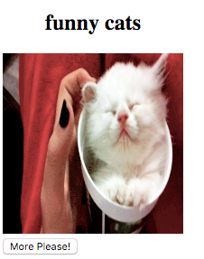

Side Effects in Practice
As you can see, there's not much going on now. We can just see the loading spinner, and nothing happens if we click on the button. Ideally we'd like our application to initiate loading of the GIF in the init generator function, but how? This is exactly where Side Effects comes into play.
First of all, we need to define an Effect that triggers the API call. Let's create a new file within the gif-viewer directory and call it effects.js. This file will contain a single function called fetchGif:
import request from 'superagent-bluebird-promise';
export const fetchGif = (dispatch, topic) => {
request(`http://api.giphy.com/v1/gifs/random?api_key=dc6zaTOxFJmzC&tag=${topic}`)
.then(response => dispatch({ type: 'NewGif', url: response.body.data.image_url }));
};
We will be using superagent-bluebird-promise, which needs to be installed with its peer dependencies by running the following command:
npm install --save bluebird superagent superagent-bluebird-promise
Every Effect function takes dispatch as its first argument and an infinite number of optional arguments which are specific to the Effect. Our fetchGif function takes dispatch and topic as arguments. Inside the function we just need to trigger the XHR request (we're using the Superagent library in this example). Because we have the dispatch function available, we can dispatch a new Action when the API response arrives, providing it with a url parameter extracted from the API response. The function is now ready to be yielded from our init function.
Let's open updater.js again and make a slight modification to our init function:
import { sideEffect } from 'redux-side-effects';
import * as Effects from './effects';
export function init(topic) {
return function*() {
yield sideEffect(Effects.fetchGif, topic);
return {
topic,
gifUrl: null
};
};
};
We are utilizing the full power of Generators here, yielding a fetchGif Side Effect in our init function. Yielding Side Effects is as easy as yielding an Effect wrapped in the sideEffect function exposed by the redux-side-effects library. Since a declarative approach for Effects, unit testing is a breeze.
We can declare any Side Effect by calling the following function:
yield sideEffect(effectFunction, arg1, arg2, arg3....);
redux-side-effects will automatically take care of Effect execution while passing in dispatch and any additional arguments. In other words, it will call effectFunction with the arguments dispatch, arg1, arg2, arg3, etc.
const effectFunction = (dispatch, arg1, arg2, arg3) => {
// Side Effect implementation
}
Even though the API is being called now, we still can't see anything in the UI because we are not handling the NewGif Action in the Updater. We need to update the Model with the appropriate gifUrl when the NewGif Action is dispatched so that the View is re-rendered with the newly fetched GIF:
export default new Updater(init('funny cats'), Matchers.exactMatcher)
.case('NewGif', function*(model, action) {
return {
...model,
gifUrl: action.url
};
})
.toReducer();
In the fetchGif Effect we dispatch the NewGif Action with the url of the GIF. We just need to handle this Action in Updater and mutate the Model appropriately. In this case, this means that we change the gifUrl field of the model to action.url. Now you should be able to see a GIF after refreshing the application:

The last mandatory requirement for our GifViewer is that when the user clicks the "More Please!" button, it should fetch a new GIF. Currently, however, nothing happens when the button is clicked. To add this functionality, we just need to define what should happen when RequestMore is dispatched. RequestMore is an Action that is dispatched when the button is clicked.
export default new Updater(init('funny cats'), Matchers.exactMatcher)
.case('NewGif', function*(model, action) {
return {
...model,
gifUrl: action.url
};
})
.case('RequestMore', function*(model, action) {
yield sideEffect(Effects.fetchGif, model.topic);
return {
...model,
gifUrl: null
};
})
.toReducer();
We can re-use the fetchGif Effect that we have already implemented. The topic is retrieved from the Model, we again set gifUrl to null so that the loading indicator is displayed in the UI. The application is now fully implemented.